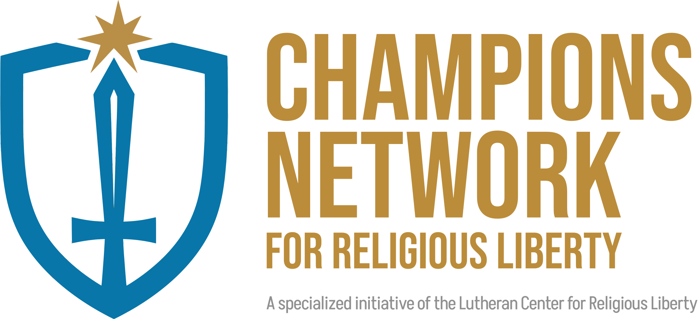

BE A CHAMPION
FOR RELIGIOUS LIBERTY

Stand up for religious freedom before it’s too late — your constitutional freedoms depend on it.
Stand up for religious freedom before it’s too late — your constitutional freedoms depend on it.
Christianity is being culturally challenged, maligned, and rebuffed by a growing group of people and groups in America who are portraying believers as villains in our culture. While we as Christians simply want to be kind, hoping to win souls for Jesus, we are being vilified instead for believing in something larger than our government and its leaders.
We cannot let these freedoms die — or America as we know it will die as well. We need champions in the church who will stand up for our God-given rights as citizens of this country. With God, there is a better way.
God provides the way for Christians to engage the world through Scripture and reason. It is the same way He engages us — He preserves the world for a time, so that He may save those who believe in Him.
God can use us as parents, citizens, law enforcement, governing agencies, etc., to preserve the foundation principles of America. We must work to preserve our culture as founded on Biblical principles.
God sent His Son Jesus and the power of His Word through His Spirit to save us from our sinful nature and its negative impact on our world. We work to spread the message of salvation in Jesus and the freedom found in Him.
Seeing the need for cultural servants to link arms and become a stronger voice in our culture, the Lutheran Center for Religious Liberty created the Champions for Religious Liberty Network. Together, this passionate group of Champion Citizens is a faithful solution to a powerful problem.
Individuals and groups begin with the Champions Academy — learning together, supporting one another, and building plans of engagement.
Groups within churches participate in the Champions Network. We work with pastors and leadership to provide extra support for Champion Citizens.
The nationwide Champions Network connects Citizens and Church Groups, then to community to community, state to state, and coast to coast.
Provide your email to receive updates from LCRL — devotions, current events, prayer requests, podcasts, and more.
 Subscribe
Subscribe
Offer your congregation a snapshot of the Champions Network by hosting a Liberty Weekend at your church — a Saturday workshop with optional Sunday preaching and Bible class. People will understand the assault on religious freedom and how to use the Network to remedy it.
 Inquire
Inquire
If you have any questions about what we do or how to get involved, schedule a Zoom call with Rev. Mark Frith, National Director for the Champions for Religious Liberty Network.
 Book a Call
Book a Call
Render therefore unto Caesar the things which are Caesar’s; and unto God the things that are God’s.Matthew 22:21
Through parents, citizens, law enforcement, governing agencies, etc., God preserves the world by reason and law — so the Gospel may be proclaimed freely.
Through His Son Jesus, His death and resurrection, and the power of His Word, God saves us from our sinful nature — and the freedom found in Christ frees us to serve our neighbor.

The Champions for Religious Liberty Network educates and connects Christians to engage culture and government from a biblical worldview. To learn more, contact Rev. Mark Frith, National Director for the Champions for Religious Liberty Network.